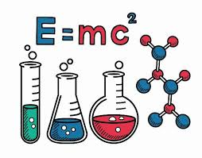

CONTENIDO DEL DIA
Tabla Periodica de los Elementos
La tabla periódica de los elementos es una disposición de los en forma de tabla, ordenados por su número atómico, por su configuración de electrones y sus propiedades químicas. , como elementos con comportamiento similar en la misma columna.
Metales de trancicion
Los metales de transición son aquellos elementos químicos que están situados en la parte central del sistema periódico, en el bloque D, cuya principal característica es la inclusión en su del orbital D, parcialmente lleno de electrones. Esta definición se puede ampliar considerando como elementos de transición a aquellos que poseen electrones alojados en el orbital d, esto incluiría a zinc, cadmio, y mercurio. La IUPAC define un metal de transición como "un elemento cuyo átomo tiene una subcapa d ( subnivel de energía) incompleta o que puede dar lugar a cationes".
